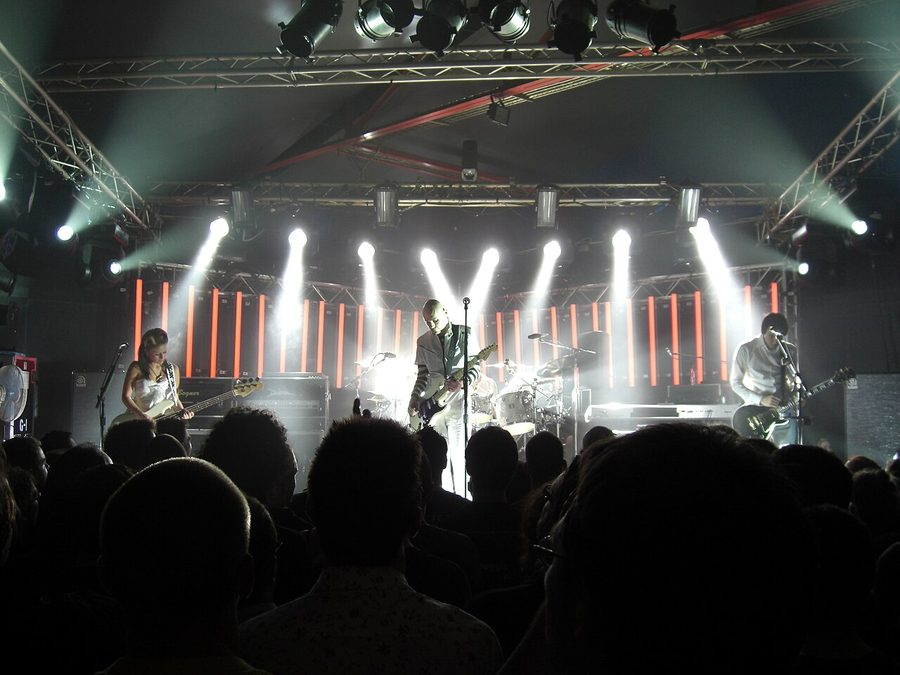

Smashing Pumpkins @ The Hordern, Sydney (27/03/08)



Check out all the photos from the Smashing Pumpkins concert here!
Are you on speaking terms with the musical heroes from your teenage years? For me, it’s a little hit and miss. I’m still really close with Nine Inch Nails and Rage Against the Machine, for instance. The former proved their longevity last year with an amazing new album last year and a life-changing gig in September, while the latter erased any cynicism relating to them reforming with a Big Day Out tour that, quite simply, rocked harder than anything we’ve ever seen before. So yeah – I’m still tight with those guys. But if you’re talking about Smashing Pumpkins, it’s a different story. That relationship has wielded a few disappointments over the years: mediocre albums, band breakups and frontman Billy Corgen generally acting like a diva. But when I heard the Pumpkins were coming back to Australia for the V Festival, after a ten-year absence no less, I knew I couldn’t turn my back on them. I’d just spent too many hours rocking out to Siamese Dream in my bedroom as a 14-year old, after all.
And so it was; the Smashing Pumpkins played their first gig in Australia on a Thursday night, two short days before they were due hit the stage as headliners for the first leg of the V Festival. And as an extra-special treat, we’d be watching them at The Hordern: a welcome surprise indeed after being forced to endure that cavernous, soulless cesspit that is the Sydney Entertainment Centre on so many recent occasions. Expectations were high, but it was a different show to what I was expecting; for better or for worse. First things first: usually you’d be safe in assuming that if you rocked up to a gig just shy of 8.30pm, you’d have plenty of time to grab a beverage, catch a bit of the support act and generally settle into things and let the anticipation build. Not so tonight: there was no support act to speak of, and when we walked in, Billy Corgan and co. were already two songs into their set and getting well stuck into Tonight, Tonight – playing to a crowd that was for some strange reason, surprisingly sedate (and for the most part, remained so for the rest of the performance).
The next surprise was that, in stark contrast to many of the big-ticket concerts we’ve enjoyed over the past year, there was no sign of any pyrotechnics, mammoth LCD screens, giant bouncing balloons or any other such overblown spectacle to be seen. It was just the five of them on stage with Billy out in front, no bullshit to speak of. This was a plus and a minus: it was refreshing to have nothing standing in the way of the audience’s connection with the band, and it made the whole show feel more like a pub gig. Never before has the Hordern felt so intimate. But on another level, the Pumpkins could have done with a dash of pyrotechnics, as it’d gel so well with that sense of whimsy and wonder that runs so strongly through their music.
From here on in, they trotted out a cleverly-balanced mix of old favorites and new selections from last year’s Zeitgeist album. Mayonnaise gave me tingles, the classic Today got everyone revved up a little, while last year’s hit Tarantula sounded just as good as anything else played that night. The moment of the night for me came when they launched into Porcelina and the Deep Ocean: it’s a song that just builds and builds, and this was captured perfectly in their performance. In fact, overall you couldn’t fault the dynamics of the band, and the music sounded so tight it was nearly studio perfect. Even Billy’s voice, which lacks technical polish at the best of times, was sounding perfectly tuned. Maybe it’s got something to do with the fact that original members James Iha and D’arcy Wretzky were replaced with skilled session musicians when the Pumpkins reformed last year? Who knows, but the show was a whole lot more refined than when they last played in Australia a decade ago. But what was missing was the exhilarating emotion they could tap into back then: that sense of the epic that’s impossible to put your finger on, it’s just there. This was definitely lacking, and could go a long way towards the lack of any true rocking out among the punters.
But if Billy has ever been accused of being a pain in the ass on many occasions, we saw nothing of this on Thursday night. His attitude to his fans was nothing less than respectful and genuine, and he even stopped the music at one stage for what proved to be a delightful little comic interlude. “Hands up anyone who arrived late to the show tonight?” he asked us, prompting me (along with many others) to sheepishly raise their hands in the air. For a moment it was like we were getting scolded, but it didn’t last for long. “What do I care what fucking time you turn up, I get paid anyway,” he laughed. “And a good case could be made that the Smashing Pumpkins have been running very late in getting back to Australia.” We were all utterly charmed, and the show went on as he launched into an acoustic version of 1979. Bliss.
Towards the end of the two-hour running time, they threw themselves into what was either the highlight of the show or its most boring, self-indulgent moment, depending on how you look at it. A rendition of Zeitgest number United States that stretched on for 20 minutes, no less. Beginning with grunty guitars and Billy’s shouts of “Revolution,” before long it had plunged into a psychedelic feedback jam that went on, and on, and on… While it may have been labelled a “guitar wank” by a few frustrated punters, it was nothing if not classic Smashing Pumpkins (anyone remember the 30-minute space jams the band used to pull off with Silverfuck?). And somehow, after more than 10 minutes of Billy Corgan prancing around on stage and extracting the darkest, nastiest sounds out of his guitar, drummer Jimmy Chamberlain somehow knew the exact right moment to slowly start pummelling the snares and bring it all back up to a peak again. Genius.
Exiting stage left after that grueling experience was over, they returned soon after for the inevitable encore – a rousing version of Cherub Rock, which came the closest to recapturing that amazing live energy the band used to possess. All up, nothing to complain about here: great venue, classic songs, ridiculously tight musicianship and a frontman showing genuine respect to his audience. But in a sense, the whole experience was like catching up with that old school friend for a drink. It’s great to remember the good times, and maybe even recapture some of the connection you used to share. But equally, you know it’s not gonna be the same. That was then, this is now.